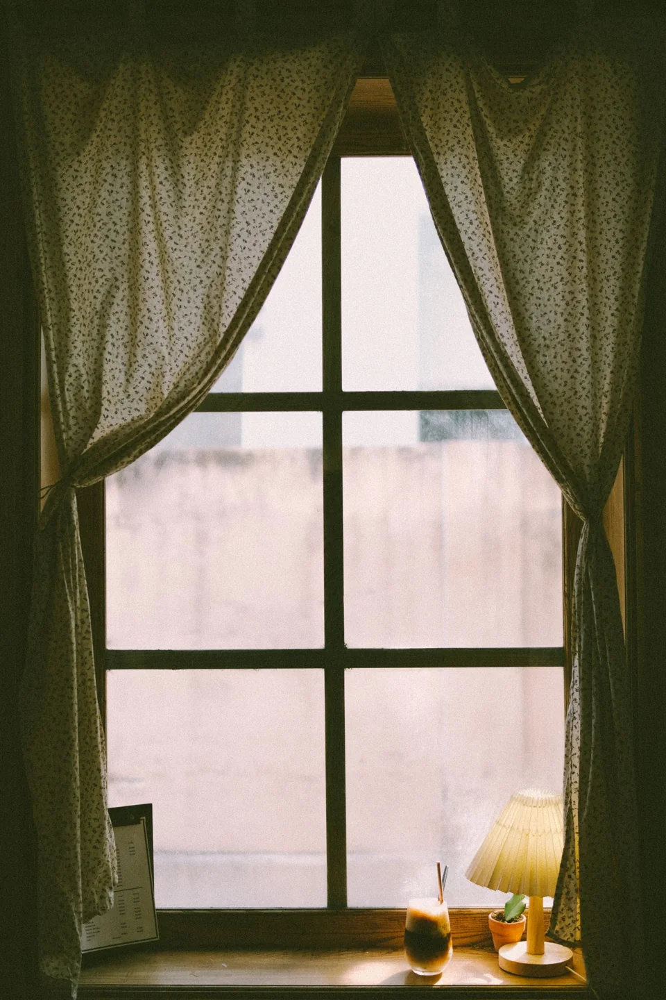

Свет
На какую сторону выходит окно? Бывает ли прямое солнце?
СТУДИЯ ТЕКСТИЛЯ · ОДИНЦОВО
Шторы, тюль и карнизы в Одинцово
Подбор тканей, пошив штор и оформление окон. Обсудите с дизайнером комнату, свет и подходящее решение.

Indigo / О ПОДХОДЕ
Тюль рассеивает дневной свет, портьеры меняют ощущение пространства, а карниз определяет, как всё будет выглядеть в движении. Начните с того, какую задачу должны решить шторы.
ВЫБРАТЬ НАПРАВЛЕНИЕ
Выберите то, что ближе к вашей задаче.
Если важно оставить комнату светлой, обсудите прозрачность ткани и приватность вечером.
Составить обращение ↗ПАМЯТКА
На какую сторону выходит окно? Бывает ли прямое солнце?
Высота потолка, ширина стены и расположение мебели влияют на композицию.
Образец ткани стоит посмотреть рядом с мебелью при дневном свете.
ПОЛЕЗНО ПЕРЕД ОБРАЩЕНИЕМ
Снимите окно целиком и часть комнаты. Добавьте фото стены с мебелью: дизайнеру важен контекст, а не только размер проёма.
Подготовить запрос ↗ВАШ СЛЕДУЮЩИЙ ШАГ
Несколько деталей помогут точнее обсудить задачу. Полученный текст можно скопировать для сообщения или использовать при звонке.
ТЕКСТ НЕ ОТПРАВЛЯЕТСЯ АВТОМАТИЧЕСКИ
ПЕРЕД ВИЗИТОМ
Фотографии комнаты и окна, примерные размеры и несколько понравившихся интерьеров. Точные замеры лучше согласовать со специалистом.
Обсудите со студией отдельные изделия и совместимость с существующими карнизами.
Она зависит от ткани, размеров, расхода материала и комплектации. Точный расчёт делает студия.
КОНТАКТЫ
Часы работы и детали визита уточните перед обращением.